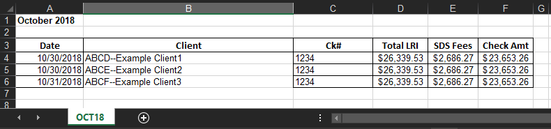

<app-toolbar></app-toolbar>
<br>
<br>

<div class="container">
  <mat-card class="mat-elevation-z8">
      <br>
      <h4>Create LRI</h4>
      <br>
    <!-- File URL start-->
    <div>
      <button mat-stroked-button (click)="fileInput.click()" matTooltip="Upload from file" [matTooltipShowDelay]="800"
        [matTooltipHideDelay]="200">
        <span>Browse</span>
      </button>
      <input #fileInput type="file" (change)="onFileChange($event)"  multiple="false" style="display:none;" />
      <mat-form-field class="fileUrl">
        <input type="text" matInput placeholder="File" [value]="fileUrl" (keyup)="determineReset($event)">
        <button mat-button *ngIf="fileUrl != ''" matSuffix mat-icon-button (click)="resetFile()">
          <mat-icon>close</mat-icon>
        </button>
      </mat-form-field>
    </div>
    <span (click)="showExampleLRI()" id="exampleFormat">Example Format</span>
    <div >
     
  </div>
    <!-- File URL end-->
    <br>
    <br>
    <ul>
      <li *ngFor="let element of LRIArray">
        <div class="row">
          <div class="col-lg-11 objectColumn">
            <div class="row">
              <div class="col-lg-6">
                <mat-form-field appearance="outline" class="mainInputBox">
                  <mat-label>Client</mat-label>
                  <input required aria-label="Number" matInput [formControl]="element.ClientControl" [matAutocomplete]="auto"
                    [(ngModel)]="element.Client">
                  <mat-autocomplete #auto="matAutocomplete">
                    <mat-option *ngFor="let client of filteredClientList | async" [value]="client">
                      {{client}}
                    </mat-option>
                  </mat-autocomplete>
                  <mat-icon matSuffix class="dropdownIcon">arrow_drop_down</mat-icon>
                </mat-form-field>
              </div>
              <div class="col-lg-4">
                <!-- Set the "value" (aka the starting value via the ngModel. Using the ngModel because that way it also updates the whitemailElement object-->
                <mat-form-field appearance="outline" class="mainInputBox">
                  <mat-label>Date</mat-label>
                  <input required matInput [matDatepicker]="LRIDatePick" (dateInput)="changeDate($event)" [(ngModel)]="element.LRIDate">
                  <mat-datepicker-toggle matSuffix [for]="LRIDatePick"></mat-datepicker-toggle>
                  <mat-datepicker #LRIDatePick>
                  </mat-datepicker>
                  <!-- (dateInput)="validateDate($event)" -->
                </mat-form-field>
              </div>
            </div>

            <div class="row">
              <div class="col-lg-6">
                <mat-form-field appearance="outline" class="mainInputBox">
                  <mat-label>Description</mat-label>
                  <input matInput [(ngModel)]="element.Description">
                </mat-form-field>
              </div>
              <div class="col-lg-4">
                <mat-form-field appearance="outline" class="mainInputBox">
                  <mat-label>Amount</mat-label>
                  <span matPrefix>$</span>
                  <input required matInput [ngModel]="element.Amount|number:'1.2-2'" (blur)="updateElement($event, element)">
                </mat-form-field>
              </div>
            </div>
          </div>

          <div class="col-lg-1 buttonColumn">
            <div class="row">
              <div class="col-lg-12">
                <button mat-icon-button matTooltip="Delete row" [matTooltipShowDelay]="800" [matTooltipHideDelay]="200"><i
                    class="material-icons" (click)="deleteRow(element)">delete</i></button>
              </div>
              <div class="col-lg-12">
                <button mat-icon-button matTooltip="Add new row" [matTooltipShowDelay]="800" [matTooltipHideDelay]="200"
                  *ngIf="element.isLast" (click)="addLRIRow()"><i class="material-icons">add_box</i></button>
              </div>
            </div>
          </div>
        </div>
        <hr>
      </li>
    </ul>

    <div class="btnContainer">
      <button id="submitBtn" mat-raised-button (click)="addLRI()">Submit</button>
    </div>
  </mat-card>
</div>


<div id="modalBackground" *ngIf="showSubmittedModal">
  <div class="container">
    <div class="row">
      <div class="col-md-6 offset-md-3">
        <mat-card class="mat-elevation-z8 submitModalCard">
          <div>
            <div class="row">
              <div class="col-12 cancelDiv">
                <button mat-icon-button id="modalCancelBtn" (click)="modalCancel()"><i class="material-icons">cancel</i></button>

              </div>
              <div class="col-12 bannerDiv">
                <i class="material-icons bannerIcon">check_circle_outline</i>
              </div>
            </div>
            <div class="row">
              <div class="col-12 updatedDiv">
                <span class="updatedMsg">{{LRINumMessage}} Added!</span>
              </div>
            </div>
            <div class="row">
              <div class="col-12 addMoreDiv">
                <br>
                <button mat-raised-button (click)="modalCancel()" id="modalMoreBtn">Add more</button>
              </div>
            </div>
          </div>
        </mat-card>
      </div>
    </div>
  </div>
</div>